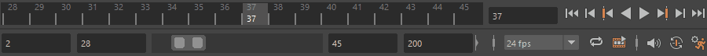
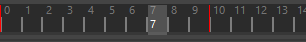

若要禁用对动力学缓存的支持，请在“缓存播放首选项”(Cached Playback Preferences)中禁用“缓存动力学”(Cache dynamics)选项。
“缓存播放”(Cached Playback)可用于立即查看对动画所做的更改，而无需创建播放预览。您还可以通过单击“时间滑块”(Time Slider)旁边的“播放选项”(Playback Options)中的“缓存播放”(Cached Playback)图标  来激活缓存。
来激活缓存。
有关“缓存播放”(Cached Playback)及其使用方法的详细信息，请参见使用“缓存播放”(Cached Playback)以提高播放速度。
- 缓存播放(Cached Playback)
- 激活缓存播放。仅当启用此选项时，“缓存播放”(Cached Playback)选项才处于活动状态。
- % of RAM
- 移动滑块可指定缓存进程停止时的切断点。使用此设置可以指定专用于“缓存播放”(Cached Playback)（而非 Maya 的所有用途）的内存量（以百分比表示）。
注： 此设置仅影响“缓存播放”(Cached Playback)。但是，增大此设置可能会影响同时在此计算机上运行的其他进程。此外，如果分配的内存太多，使用“缓存播放”(Cached Playback)运行多个 Maya 会话也可能影响性能。
- 达到内存限制时停止缓存(Stop caching at memory limit)
- 激活此选项，以便在达到指定的内存限制时放弃缓存过程（这是默认设置）。
- 如果“缓存播放”(Cached Playback)生成有关内存限制的警告，您可以禁用此选项以覆盖指定的内存限制，以使缓存可以继续。（请注意，禁用此选项可能会导致缓存使用系统的所有可用内存。）
- 若要查看系统的内存状态，请参见“解算工具包缓存”部分中的“内存管理”(Memory Management)区域。
- 首选模式(Preferred Mode)
- 选择如何使用“缓存播放”(Cached Playback)利用系统资源。有三种模式：
-
- 解算缓存(Evaluation cache)
- 如果您不确定要使用哪一种模式，则与视口/渲染器无关的通用缓存模式是一个不错的选择。这种模式比其他模式慢，但可用于 Viewport 1.0
- 视口硬件缓存(Viewport Hardware cache)
- 使用显卡内存来提高性能。
- 视口软件缓存(Viewport Software cache)
- 使用系统内存来提高性能。
- 混合缓存(Hybrid Cache)
-
此设置可用于扩展缓存播放以与 GPU 变形混合，从而改善依赖大量 GPU 计算和大型绑定的场景的缓存。注： 此模式还会启用“GPU 覆盖”(GPU Override)设置。但如果禁用此模式，则不会禁用“GPU 覆盖”(GPU Override)。
“混合缓存”(Hybrid Cache)保留并还原 GPU 变形链的输入，而不是在变形后缓存完整的几何体。由于变形器链的输入（几个矩阵、几个动画参数等）通常比要变形的几何体小得多，因此这通常会导致存储的数据较少。这还会为整个动画仅缓存一次原始未变形的静态几何体，并将其保留在 GPU 上，从而导致 CPU 和 GPU 内存之间的传输较小。
几何体保留在 GPU 上可以带来巨大的性能提升，尤其是对于大型几何体，还可以显著减少内存使用。
-
设置 行为 禁用(Disabled) 不使用“混合缓存”(Hybrid Cache)，正常缓存几何体。该设置为默认设置。 平滑网格预览(Smooth Mesh Preview) “混合缓存”(Hybrid Cache)仅适用于至少具有一个网格（使用“平滑网格预览”(Smooth Mesh Preview)）的 GPU 变形的解算簇。 全部(All) “混合缓存”(Hybrid Cache)适用于所有 GPU 变形的解算簇。 - 防止跳帧(Prevent Frame Skipping)
-
实时播放时激活此选项（请参见“时间滑块”(Time Slider)首选项中的“播放”(Playback)部分），确保 Maya 在构建播放缓存时不会跳帧。
-
通常，以实时播放速度播放动画时，Maya 会跳帧以保持速率。但是，如果打算使用“缓存播放”(Cached Playback)，您不希望遗漏任何帧，使用此选项可以优先填充缓存，使缓存顺利构建而不跳帧。
注： 缓存完成并且“时间滑块”(Time Slider)填充后，如果缓存播放仍无法达到所需帧速率，跳帧将再次进入活动状态。 - 显示警告消息(Show warning messages)
- 激活此选项，以便在发生禁用缓存或导致缓存出现问题的事件时，在脚本编辑器中显示支持消息。有关可能禁用“缓存播放”(Cached Playback)的情况的详细信息，请参见缓存播放限制(Cached Playback Limitations)和缓存播放不支持的节点(Cached Playback unsupported nodes)。
- 丢弃播放范围之外的帧(Discard frames outside playback range)
-
激活此选项，以便从当前播放范围之外的帧中清除任何缓存数据。这意味着，如果调整播放范围大小，使某些缓存帧不再位于激活的缓存区域内，其缓存的数据将会丢失。
- 缓存平滑网格(Cache Smooth Meshes)
- 选择“缓存播放”(Cached Playback)处理“平滑网格预览”(Smooth Mesh Preview)的方式。处于活动状态时，将缓存平滑网格。如果在启用“缓存播放”(Cached Playback)的情况下“平滑网格预览”(Smooth Mesh Preview)会导致性能问题，请禁用此设置。该设定默认处于禁用状态。
-
默认情况下，当“平滑网格预览”(Smooth Mesh Preview)处于禁用状态时，网格会自动显示。当“平滑网格预览”(Smooth Mesh Preview)处于启用状态时，您可以同时显示原始网格和平滑预览（“框架 + 平滑网格”(Cage + Smooth Mesh)显示模式），也可以显示平滑预览本身（“平滑网格”(Smooth Mesh)显示模式）。
- 缓存动力学(Cache dynamics)
-
用于禁用缓存动力学（nCloth 和 nParticle）。动力学缓存显示为与默认“缓存播放”(Cached Playback)状态行分开的状态行。有关每个状态行及其表示内容的描述，请参见“缓存播放”(Cached Playback)状态行的状态。

粉色动力学状态行和默认的蓝色动画状态行。
- 默认情况下启用该设置。
-
注： 对“缓存播放”(Cache Playback)状态行的外观所做的更改会影响“动画”(Animation)和“动力学”(Dynamics)缓存条带。
- 缓存填充(Cache fill)
- 选择何时生成缓存。
-
- 播放和后台(Playback & Background)
- 当按“播放”(Play)并且场景处于空闲状态时，触发“缓存播放”(Cached Playback)。该设置为默认设置。
- 播放(Playback)
- 仅当播放动画时触发“缓存播放”(Cached Playback)。
- 背景(Background)
- 在不按“播放”(Play)的情况下自动触发“缓存播放”(Cached Playback)。
注： 此模式不会在播放时触发缓存。此模式与“播放和后台”(Playback & Background)模式之间的唯一区别是，当您使用此模式时，缓存仅在后台构建。它不会在播放期间构建。
- 背景填充方向(Background fill direction)
- 在“时间滑块”(Time Slider)上设置缓存开始加载的位置。
-
- 向前和向后(Forward & Backward)
- 从当前帧开始在两个方向上生成缓存。该设置为默认设置。

- 向前(Forward)
- 在“时间滑块”(Time Slider)上从当前帧开始向前构建缓存。

- 向后(Backward)
- 在“时间滑块”(Time Slider)上从当前位置开始朝动画开始方向（从右到左）构建缓存。

- 从动画起点前进(Forward from Animation Start)
- 在“时间滑块”(Time Slider)上从动画开始向前构建缓存。
显示缓存播放状态(Show Cached Playback Status)
- 如果您卸载“cacheEvaluator”插件，则会禁用这些控件。
- 您可以在“颜色设置”(Color Settings)的“缓存播放”(Cached Playback)部分中更改缓存状态行的颜色。
- 显示缓存状态(Show cache status)
- 在“时间滑块”(Time Slider)上显示“缓存播放”(Cached Playback)状态行。
- Position
- 选择希望“缓存播放”(Cached Playback)状态行在“时间滑块”(Time Slider)上出现的位置。
- 时间轴上方(Above Timeline)

- 时间轴下方(Below Timeline)
- 时间轴上方(Above Timeline)
- 高度(Height)
- 设置“缓存播放”(Cached Playback)状态行的高度。
“缓存播放”(Cached Playback)状态行尺寸 1 和尺寸 13
- 垂直距离(Vertical spacing)
- 设置“时间滑块”(Time Slider)边框与“缓存播放”(Cached Playback)状态行之间的间隔。
“缓存播放”状态行间距为 10
- 显示无效帧(Show invalidated frames)
- 如果要查看状态行上需要更新的帧，则激活此选项。

具有无效帧的“缓存播放”(Cached Playback)状态行
- 每次更改动画时，“缓存播放”(Cached Playback)状态行会将受影响的帧变为深蓝色。当此选项处于活动状态时，您可以查看发生更改的位置以及重画缓存的区域。
-
帧可以处于以下 3 种状态：
- 未缓存（在状态行中显示为空白区域）
- 已缓存（在状态行中显示为浅蓝色）
- 部分缓存（显示为深蓝色）
“显示无效帧”(Show invalidated frames)复选框适用于处于第 3 种状态（部分缓存）的帧。
这种部分无效的帧比未缓存的帧的计算速度更快。
有关“缓存播放”(Cached Playback)失效的详细信息，请参见“缓存播放”(Cached Playback)状态行的状态。
- 显示子帧(Show subframes)
- 激活以绘制缓存子帧，而非整个帧范围。只要时间滑块显示分数帧速率（例如 0.5 或 0.25），就会显示白色子帧。白色子帧显示，让您知道小数帧上的活动已缓存。
-
显示缓存子帧时使用的内存比默认（非子帧）缓存多，因此建议仅在进行故障排除时使用此设置。如果不希望缓存子帧，请调整缓存设置，以便缓存整个帧，这样就不会耗尽缓存内存。
显示播放范围为 0.5 的缓存子帧
注： 如果缓存了许多子帧，并且缩小了“时间滑块”(Time Slider)，则子帧看起来可能并不会与正常的“缓存播放”(Cached Playback)状态行有所不同。放大以查看详细信息。 - 显示警告框(Show warning frames)
- 激活此选项可在由于内存不足或处于安全模式而禁用缓存时使“缓存播放”(Cached Playback)状态行变为黄色。如果您希望关闭警告颜色，请禁用此选项，以便只有未缓存的帧显示在“时间滑块”(Time Slider)上，警告状态则显示在图标和脚本编辑器消息中。有关详细信息，请参见“缓存播放”(Cached Playback)状态行的状态主题中的“安全模式”(Safe Mode)。